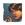

|

Kizmet
Author of 99 Stories |
Notes: This one's pretty dark, don't say I didn't warn you.
"That jerk, why does he always have to insult my cooking? I was really trying." Akane complained as she stared out her window into the clear, icy cold night. Akane glanced at her bed but knew she wouldn't be getting to sleep until her wayward fiancé came home. "He probably went to Ukyo's or the Nekohauten." She muttered.
The gate creaked and Akane caught a brief glimpse of red hair gleaming in the moonlight. She sighed with relief. "Ranma you idiot." The murmured insult sounded almost affectionate.
There was a soft creak from the bathroom door. Akane moved to sit on her bed then pulled a quilt around her shoulders. She listened to the sound of water running. The rattle from the water pipes lasted for what seemed like a very long time. Afterwards all was silent. Akane strained her ears until she finally heard the soft padding of feet pass her door on their way to the guestroom where Ranma and his father, Saotome Genma were staying. Then Akane lay down and drifted into peaceful slumber.
The next morning Akane scooped up her jogging outfit and headed for the bathroom as she stifled a yawn. Truth be told, Akane didn't like mornings anymore than her older sister Nabiki did. It was force of will that had her up at dawn every day for her morning jog, not desire.
The cute, shorthaired girl splashed her face with water then started to squeeze some toothpaste out of the tube. A bit of red in the trashcan caught her eye. Suddenly Akane was wide awake. She bent down for a closer look and a chill shot down her spine, the object that had captured her attention was a braid of bright, red hair, tied with a bit of unadorned string; it looked like it had been chopped off with a kitchen knife.
Akane was out the door before her toothbrush hit the floor.
Genma stared down at his son's empty futon and grumbled unhappily, apparently he'd missed the chance to catch the boy off guard this morning.
With a sigh Genma stepped out into the hall and saw Akane, his future daughter-in-law, as she stumbled toward the bathroom. Genma grinned to himself; if Ranma was in the bathroom this was the perfect opportunity for the kids to get to know each other better. He knew his son, the boy could shout 'uncute' at the top of his lungs a dozen times a day and it didn't hide that he was extremely fond of Tendo's youngest. Genma was also aware that endless hours of practice had given his son a healthy amount of muscle tone. It wouldn't hurt anything if they got another good look at each other, hormones had to kick in one of these days.
Genma whistled cheerfully as he headed outside. If the boy was in the bath the whole house would hear about it shortly. If the boy wasn't there, odds were he was in the kitchen.
The elder Saotome found his old friend, Tendo Soun sitting on the porch. He gave Soun a confident grin. "Have they made up yet?" Soun asked hopefully.
"Neither of them can hold a grudge." Genma insisted cheerfully.
"You're right of course, Saotome-kun. Their feelings are too strong. If only Ranma would just learn to like my little Akane's cooking." Soun sighed.
"We could ask Tofu about a pressure point to kill the boy's sense of taste." Genma proposed.
Soun hesitated. "Could there really be something like that?"
"There are martial arts Tea Ceremonies, why not?" Genma replied.
"Ranma!" Akane shouted. Soun sighed. Genma frowned. There was something off about the girl's tone; it certainly wasn't her normal bathroom encounter outrage.
"Is something wrong?" Kasumi asked with gentle concern.
"I… I don't know. I just… We need to find Ranma." Akane stammered. "Where is he?" She demanded as she grabbed Genma and pulled him to his feet.
"My baby's showing concern for her fiancée." Soun wailed happily.
Genma carefully loosened Akane's hands, took a quick breath then said. "Perhaps we should look for the boy. He wasn't in his bed when I woke this morning."
"So he spent the night somewhere else." Nabiki suggested. She managed a sleepy smirk.
"I heard him come home last night!" Akane snapped. She glared at her sister.
"Lighten up Sis, it's Ranma, what's the big deal?" Nabiki asked.
"I… I have a bad feeling." Akane said, her earlier worry returning in a rush.
"Alright, I'll call around." Nabiki sighed.
Akane climbed up onto the roof of her home.
"Where do you go when you jog?" Ranma asked. He didn't look up; his ragged hair hung in his face and hid his eyes. He had a quilt wrapped tightly around his body.
"I walked all the way down to the bridge before I thought to check up here." Akane said. She sat down beside him on the roof.
"You shouldn't go there." Ranma flexed his hands with an unusual stiffness. The tips of his fingers were white and puffy from frostbite. Akane noticed bruises around his wrists and just above his collar.
"Did you get in a fight with Mousse?" Uncertainly Akane reached out a hand to brush his cropped hair. "The hair looks more like Principal Kuno got lucky, but the bruises look like Mousse's chains."
Ranma flinched and batted her hand away. "I ain't ever lost to either of them!" He stood abruptly and leapt off the roof.
"I never said anything about loosing!" Akane exclaimed. "Or is the great Saotome Ranma beyond even taking a hit anymore?"
Ranma blanched and the sense of wrongness crashed down on Akane again. He stood there, bundled up against the cold, cropped hair flaring wildly around his face, body tensed for an attack, his blue eyes looked panicked. "Uncute, stupid, macho tomboy!"
"Ranma, I'm worried about you, you jerk!" Akane yelled at his retreating back.
Nabiki grumbled irritably as she trudged down Nerima's main thoroughfare in search of her little sister's errant fiancée. She glared at the cheerful bustle of vendors and early morning shoppers. She viciously hated the species known as morning people.
'Finding Saotome Ranma shouldn't be difficult.' Nabiki reminded herself. All one had to do was look for the most violent knot of chaos and Ranma was practically guaranteed to be at the heart of it.
Nabiki wondered to herself how Akane managed to talk her into this. First, it was Ranma they were talking about, not someone who might actually end up seriously hurt or anything. Second, Nabiki hadn't even thought to charge her sister for her assistance. With a sigh Nabiki chalked the lapse up to the ungodly hour at which Akane had made her request. Still, she had promised to help and Tendo Nabiki had her honor to maintain, even if her honor was defined somewhat differently than that of the local martial artists.
"Waste of time." Nabiki muttered, then she noticed a crowd of people standing in the park beside one of Nerima's many canals. Hopefully she worked her way to the front of the crowd. She felt a slight frown creasing her face at the silence around her. The crowds drawn by Ranma's fights were normally boisterous and cheerful. Outside of the Nerima Wrecking Crew, no one took their fights seriously. Sure they caused untold amounts of damage but they were the area's main tourist draw and no one ever really got hurt. All of the participants were too skilled and, whether or not they admitted it, too decent of human beings to allow their matches to end in tragedy. So while the participants saw their duels as a deadly serious matter, the spectators saw them as a special effects extravaganza brought to life and they reacted accordingly. This crowd was much too serious.
Nabiki's hand flew to her mouth when she finally made it to the front of the crowd. Just four feet in front of her, on the other side of the yellow police tape, lay a severed human hand. Gradually Nabiki's mind made sense of the rest of the scene. Policemen were swarming the little park, documenting the occurrence. Morbidly Nabiki tried to determine how many bodies she was looking at; at least four heads were visible but she wouldn't have argued if the actual count were closer to eight or nine. It was hard to tell how the dismembered parts had once fit together.
"Got another leg." One of the officers called. "Severed cleanly, just like the rest. What are we looking for: Some lunatic with a katana? I hear the area's know for some pretty unbelievable martial artists."
An officer Nabiki recognized as a local patrolman, a classmate's father no less, shook his head. "They're a bunch of kids. The group's kendoist uses a bokken. They're good kids, one of them couldn't have done this."
Nabiki found herself nodding in agreement along with the rest of the crowd. Even if an accident did happen it wouldn't be like this. Blunt force trauma was the most likely scenario. It wouldn't be a bunch of nameless strangers who got hurt either. Finally, if a member of the NWC actually killed someone the police wouldn't be looking for the killer because the killer would be sitting right by the body crying their eyes out or puking.
Nabiki forced a parody of a grin on to her face and reminded herself one last time that this had nothing to do with a certain missing pig-tailed martial artist or his entourage. She turned around and started walking back toward the Dojo while she tried to put what she'd seen out of her mind.
"Tadaima!" Nabiki called automatically as she toed off her shoes.
"You're just in time, I was about to serve breakfast." Kasumi replied.
"So it was a false alarm about Saotome." Nabiki deduced.
Kasumi's smile faltered for a second. "I'm certain he's fine." She said.
Nabiki understood Kasumi's hesitation as soon as she entered the family room. Ranma had been as vain about his hair as any girl before Principal Kuno showed up and made Ranma's Pigtail the prize in an on-going competition. Keeping it intact was a matter of pride for Ranma. Nabiki was hard pressed to decide which scenario was less likely: Ranma encountering an opponent skilled enough to take something he valued or Ranma lopping off his own hair like a five-year-old playing barber shop.
Curiosity with a smidgen of concern blossomed into full-fledged worry moments after breakfast was served.
In Nabiki's experience Ranma avoiding Akane's food was prime entertainment; Ranma picking at Kasumi's food with no apparent interest was reason enough to call Dr. Tofu… and maybe check for signs of the Apocalypse.
"Is something wrong with your meal?" Kasumi asked worriedly.
"Boy, Kasumi cooked, be appreciative or she might quit." Genma said in a stage whisper that was clearly heard by every person in the room.
Akane started doing a slow burn.
Ranma popped a quick bite in his mouth. "Yum… I'm just not hungry."
A moment of dead silence descended over the table.
"Akane, you'll take him by to see Tofu." Nabiki said finally. "You have no idea how much work it would be to recalculate the odds on all the standard fights to account for a sick Ranma."
"I'm fine!" Ranma exclaimed as he jumped up from the table. "Can't you just leave me alone?"
"If you'd act normal we wouldn't bother you." Akane yelled back.
"Fine!" Ranma shouted. He dropped back into his place and the food simply disappeared from his plate, then he walked out of the room.
Nabiki didn't say anything but she remembered Ranma learning the Parlay du Foie technique to win a contest in martial arts French Dining.
Tendo Soun's hand hovered over the Go board, he glanced at his thoroughly distracted friend and then decided not to cheat. It didn't seem worth it when he hadn't done anything to distract Genma.
The source of Genma's distraction had been in the Dojo for over five hours now.
"Your turn." Soun said then turned to watch Ranma. He cringed; the simple kata should have been as natural as breathing to a martial artist of Ranma's caliber. After the first hour Ranma had achieved a sort of mechanical precision but there was no artistry in his movements.
"I taught the boy better than to allow emotion to corrupt his focus." Genma complained. He was careful to keep his voice from carrying across the yard.
Soun nodded. "It's not easy to raise a child, much less a martial artist."
"Hmmm." Genma agreed. "The boy normally doesn't let things get to him."
They watched as Kasumi walked into the dojo. "Ranma, do you want me to even out your hair?"
Ranma finished out the kata then nodded. He followed Kasumi into the kitchen.
Kasumi sat Ranma down then wrapped a towel around his shoulders. She picked up the scissors then hesitated. "I'm not sure what would be the best style for both your forms."
"I don't give a damn what the girl-form looks like." Ranma stated. "She's not real. I'm never letting her come back."
Kasumi brushed her fingers through Ranma's dark hair and sighed. As she snipped she tried to superimpose her memories of the petite redhead over the boy and tried to find something that worked for both. After months of familiarity with Jusenkyo curses Kasumi knew it was only a matter of time before water found him.
Akane started when Ranma jumped off the roof at dawn the next morning as she left the house for her morning jog. "Ranma?"
"Goin' with ya."
"What about your Dad?"
Ranma shrugged.
"Suit yourself." Akane set out at a steady pace. Ranma ran along the top of the fence half a stride behind her.
Gosunkugi crouched behind a gatepost while he waited for Akane to pass by.
After the first block Ranma started ranging a little further abroad. He moved ahead of Akane and roamed both sides of the street as well as the tops of the roofs and fences lining it. He never let Akane out of his sight.
"Stop showing off!" Akane complained.
"This ain't showing off, tomboy."
"If you're so bored you should have just stayed at home!" Akane realized she was talking to no one and shook her head in annoyance.
On the other side of the garden wall Gosunkugi tried to convince himself that Ranma's expression was a smile, not a baring of fangs.
There was no give in the garden wall against Gos' back or in the arm across his throat. "Oh! Ranma, hi."
"Gosunkugi." The pale boy could have sworn he heard a growl underlying Ranma's voice. Ranma's steel blue eyes stared through Gos. "Come near Akane again and I'll kill you. Try another love spell…" Ranma trailed off. Gos gulped.
Ranma leapt back on top of the fence and raced after Akane.
Gosunkugi's knees buckled and he slumped to the ground. He was shaking uncontrollably. Ranma had always scared him stiff, the martial artist was so effortlessly powerful. In the past Gos had never registered as a threat. He'd done his worst and Ranma laughed and slapped him on the shoulder. He suddenly found himself wishing he could go back to being a joke to the other boy. Until today he had no idea how scary Ranma really was.

|
Review this Chapter |